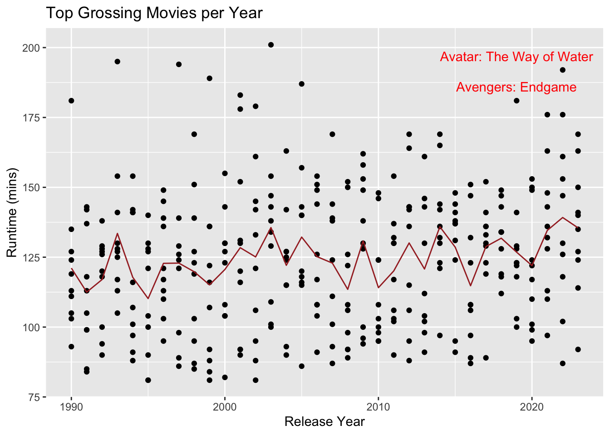
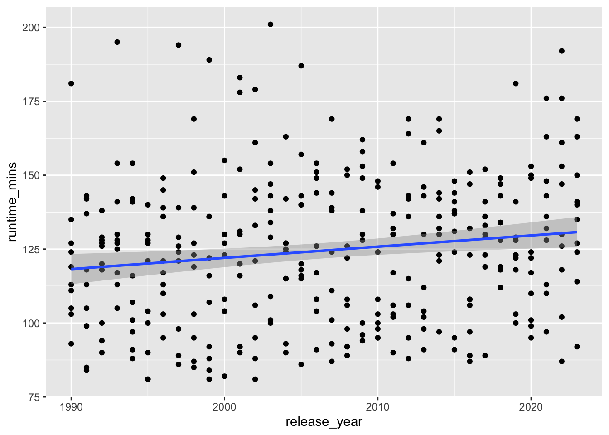
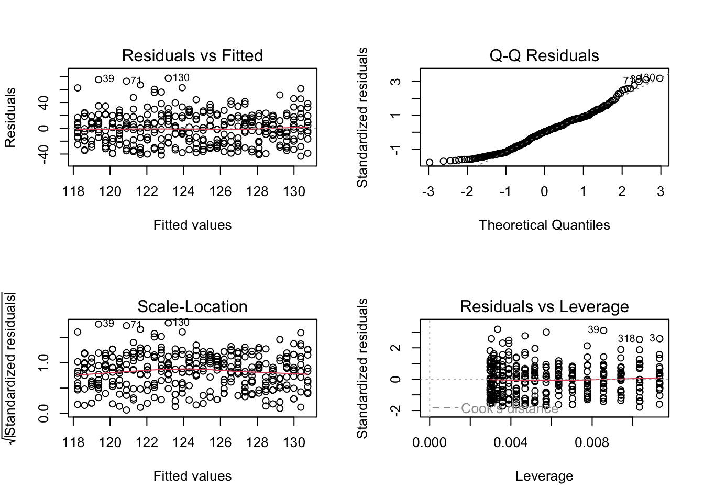

I recently came across an article posing a question:
Are blockbusters getting (reely) longer?
Fueled by the buzz around Christopher Nolan’s Oppenheimer being his longest movie (just over 3 hours), I decided to explore this question using publicly available data.
As an exercise in inference this question can be answered with some analysis. I fetched top grossing movies in each year from boxoffice mojo and movie details from imdb and combined them to create the following dataset.
# A tibble: 6 × 3
release_year runtime_mins title
<dbl> <dbl> <chr>
1 1990 103 Home Alone
2 1990 127 Ghost
3 1990 181 Dances with Wolves
4 1990 119 Pretty Woman
5 1990 93 Teenage Mutant Ninja Turtles
6 1990 135 The Hunt for Red October
# Scatterplot of movie runtime over timeggplot(yearly_top_movies, aes(x = release_year, y = runtime_mins)) +geom_point() +# Scatter points for movie runtimesgeom_text(data = annotations, aes(label = title), color ="red", nudge_y =5) +# Annotate specific moviesgeom_line(data = mean_df, aes(y = runtime_mins), color ="brown") +# Line for yearly mean runtimesggtitle("Top Grossing Movies per Year") +xlab("Release Year") +ylab("Runtime (mins)")

Analysis
Comparing recent vs old movies
To simplify the analysis we can consider more recent releases (2013-2023) and compare them to releases from much older timeframe (1990-2000). The runtime distributions for movies in these 2 categories is different although not significantly (visually).
Now we can compare runtimes between two periods. It would have been a straightforward exercise in testing the hypothesis of difference of means using a t-test had the distributions of runtimes been more normally distributed.
Additionally, the cutoff chosen for old (<= 2000) and recent (>=2013) are arbitrary. We would ideally want a more comprehensive statement about movie runtimes increasing over the years.
Neverthless, as a preliminary (and simple) analysis we can use bootstrap to compare means of runtimes in the above groups.
library(boot)# Define a function to calculate the difference of meansdiff_mean <-function(data, indices) {# Resample the data resampled_data <- data[indices, ]# Calculate means for each group mean_group1 <-mean(resampled_data$runtime_mins[resampled_data$label =="old"]) mean_group2 <-mean(resampled_data$runtime_mins[resampled_data$label =="recent"])# Return the difference of meansreturn(mean_group2 - mean_group1)}set.seed(123)bootstrap_results <-boot(data = testset, statistic = diff_mean, R =1000)# Print bootstrap resultsprint(bootstrap_results)
# Calculate confidence interval for the difference of meansci <-boot.ci(bootstrap_results, type ="perc")print(ci)
BOOTSTRAP CONFIDENCE INTERVAL CALCULATIONS
Based on 1000 bootstrap replicates
CALL :
boot.ci(boot.out = bootstrap_results, type = "perc")
Intervals :
Level Percentile
95% ( 3.502, 15.736 )
Calculations and Intervals on Original Scale
If we bootstrap the mean of movie times and take the difference between means of recent release years from old, there is evidence that blockbuster movies are getting longer in recent years, and the difference can be up to 10 min on average and can be expected to be between 4 min and 16 min.
So on your next visit to the theatre make sure to get some extra popcorn !!!
Estimating effect of time
In the want of better precision in identifying the effect of time on movie runtimes, we can formulate a regression problem and estimate the effect of year.
`geom_smooth()` using formula = 'y ~ x'

The plot above partly confirms our intuition about the increasing trend of runtime.
Call:
lm(formula = runtime_mins ~ release_year, data = yearly_top_movies)
Residuals:
Min 1Q Median 3Q Max
-43.369 -19.617 0.488 16.422 77.834
Coefficients:
Estimate Std. Error t value Pr(>|t|)
(Intercept) -636.1435 271.4520 -2.343 0.01969 *
release_year 0.3791 0.1353 2.802 0.00537 **
---
Signif. codes: 0 '***' 0.001 '**' 0.01 '*' 0.05 '.' 0.1 ' ' 1
Residual standard error: 24.42 on 335 degrees of freedom
Multiple R-squared: 0.0229, Adjusted R-squared: 0.01999
F-statistic: 7.852 on 1 and 335 DF, p-value: 0.005372
The regression above supports the hypothesis that release_year has positively contributed to movie runtimes at approximately 0.38 min/year. Considering our previous finding on average between 1995 and 2018 the runtime increased by approx. 10 min. From the regression estimate the increase is 0.3791 * (2018-1995) = 8.7 min.
We can certainly run some diagnostics to be sure of our model.

The residuals appear to have no pattern with fitted values and also have fairly constant variance. There are no significantly high leverage points or outliers. However, the errors are not quite normally distributed. This can be ignored by relying on large sample size and the fact that other diagnostics are fine. But, we shall check if just in case any transformation of runtime_mins may help.
The Box-Cox transformation check above hints that there may be some benefit if we used log-transformation (since lambda approximately 0). This thread does not materialise into anything meaningful as upon transformation, the diagnostics do not change materially and the effect size of release_year is practically the same (0.32% per year, 0.38 min/year on base of 119 min). So we will not use any transformation in our model.
There may also be some degree of autocorrelation among residuals due to the fact that we’re working with timeseries data. We can test for this autocorrelation and handle it if necessary.
Auto-correlation among residuals: 0.01
Durbin-Watson test
data: runtime_mins ~ release_year
DW = 1.982, p-value = 0.4126
alternative hypothesis: true autocorrelation is greater than 0
There doesn’t appear to be significant autocorrelation and other model diagnotics appear to be fine.
Conclusion
There has been a rather steady increase of 0.38 min/year (on average) in movie runtimes as per the dataset we have used. In effect expect to be seated for about 10 more minutes in your favourite blockbuster compared to when you went to movies as a kid.